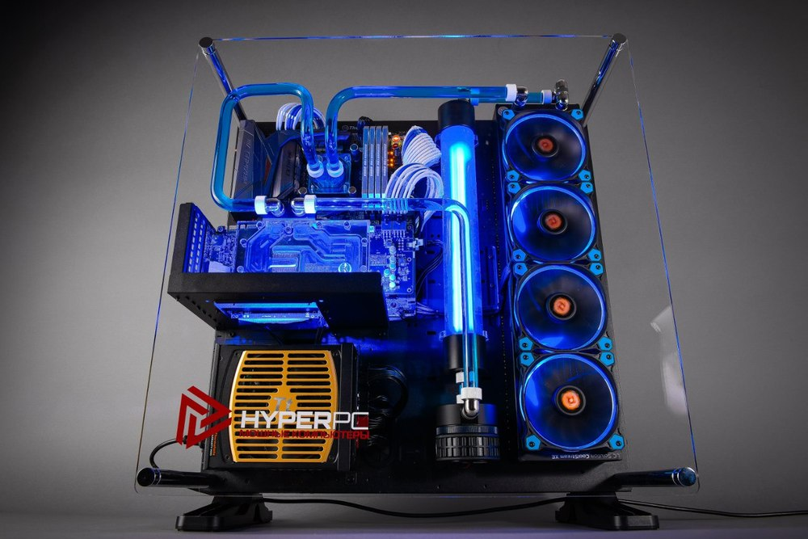

Подбор компонентов является одним из сложнейших элементов при сборке ПК. Нужно определиться для каких задач необходим компьютер, если для офисной или домашней (несложной) работы, то можно сэкономить на некоторых комплектующих, к примеру на видеокарте, ее можно вообще не ставить, ведь во всех современных процессорах предустановлен интегрированный видеочип. Если вам нужен компьютер для более серьезных задач, таких как программирование (на средневысоком уровне), играть или монтировать(транслировать) видео, то экономить на комплектующих не желательно. Начнем с основных элементов: процессор, материнская плата, блок питания, оперативная память, жесткий диск, корпус, периферия. Сперва нужно выбрать процессор, лучше взять версию «BOX», в ней сразу будет и кулер, но нужно учитывать, что он ну будет справляться со сложными задачами, потом материнскую плату так, чтобы сокет на материнской плате совпадал с сокетом процессора, затем подбираем оперативную память, такую которая будет совместима с вашей материнской платой по типу памяти. Жесткие диски есть двух типов SSD(твердотельные) HDD(магнитные), разница у них только в скорости (SSD быстрее и дороже), нужно выбрать нужный объем тип жестких дисков*. Что касается блока питания и корпуса, то на этих деталях лучше не экономить, ведь они могут пережить и не одну сборку. Кол-во ватт необходимых вам (в блоке питания) можно рассчитать на сайте (ссылку не даю, ведь, они мне не платят). Корпус стоит выбирать таким образом, чтобы туда поместилась материнская плата, блок питания, видеокарта, если такая имеется, также желательно чтобы в корпусе было предустановлено хотя бы два вентилятора. Периферию не нужно покупать по статочному признаку, ведь, это то что всегда будет находится у вас на виду, и это во что вы смотрите, на что тыкаете. И наконец последняя часть это видеокарта, она нужна для более сложных задач нежели серфинг в интернете, но при ее выборе стоит обратить внимание на такое понятие, как раскрытие видеокарты, это значит, что при максимально возможной работе компьютера видеокарта должна работать на все 100%.